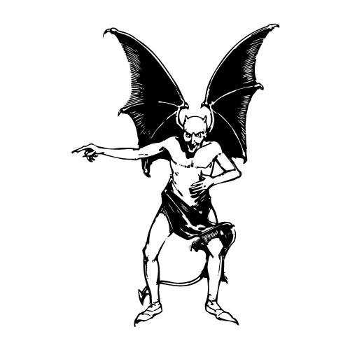

Photo in mirror...
*CLICK* The camera hums and whirrs whilst slowly releasing a square polaroid from beneath itself. You wait. Eventually the polaroid slips out into your hand. You take a look but it's all faded and the ink hasn't settled yet. A minute or so later the image begins to appear and you are able to view it properly. You can clearly see the reflection of yourself holding the camera up and smiling - but wait - there is a dark shadow looming behind you in the photograph. The more you look at this figure the more human like it becomes and yet at the same time it becomes more and more subhuman. You are able to identify dark circles on a head and shoulders-like silhouette. You begin to freak out. You close and rub your eyes but when you re-open them the figure is still standing behind you in the polaroid. You're freaking out. You try rub the image as though the figure were a smudge of ink but it remains steadfast. Suddenly aware of a physical presence over your left shoulder you hold your breath and turn slowly. The figure is behind you... in real life. Looming over you is this vantablack figure with no distinct human features apart from some shaded areas which might resemble a pair of eyes. A demon. A real demon looming over you with evil intent flickering in its eyes. Your pupils are dilated at the sight of this demon. The colour flushes out of your skin and you feel a rush of adrenaline surge through your body. You are trembling with energy and you can either fight this demon or run away as fast as you can... Which is it?